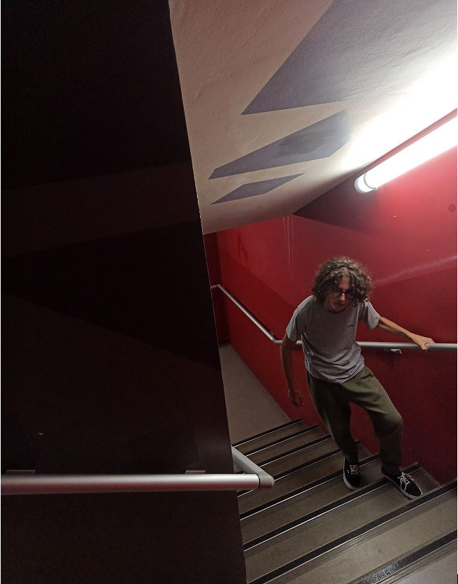
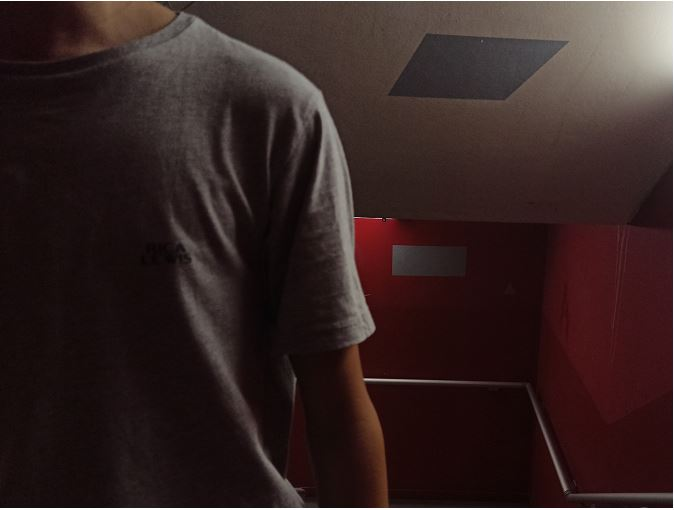
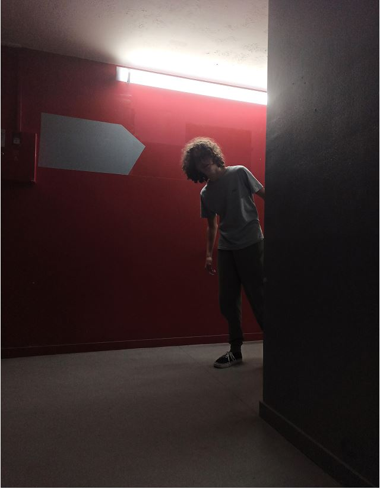
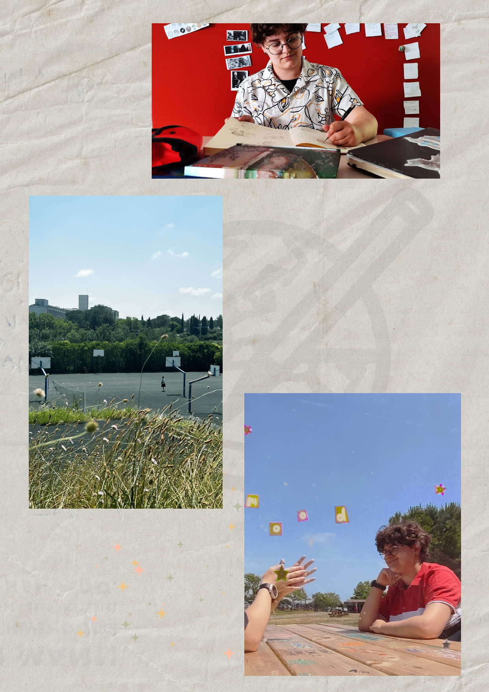

Retransmettre l'atmosphère d'un espace
Photographies
Le premier projet, une série explore l'atmosphère oppressante des cages d'escalier.
L'objectif était de figer ce sentiment d'insécurité face à l'inconnu, là où le
silence et les jeux d'ombres transforment un simple lieu de passage en un
espace angoissant
Le deuxième, un portrait en trois photos d'une personne. J'ai cherché à isoler trois traits distincs
chez la même personne: son esprit créatif, son envie d'exploration et,
à l'opposé, sa chaleur humaine très réconfortante.
Scroll



